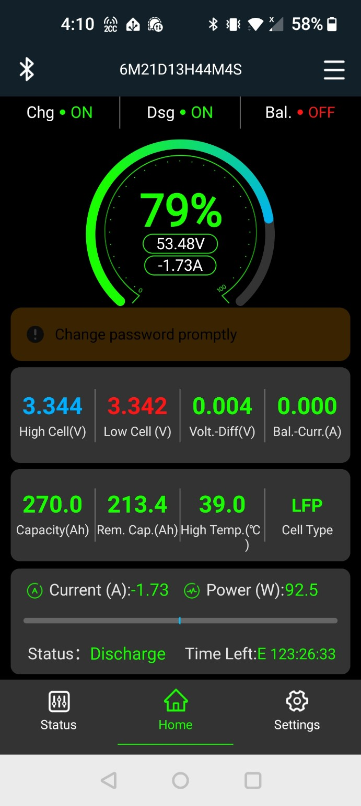

Collection
Field instruments
Water level, soil moisture, temperature, motion, weather, battery state, and future measurements.
Measurement & Memory
Home Assistant, MQTT, ESPHome, environmental sensors, dashboards, photographs, and the local computers that preserve observations.

Collection
Water level, soil moisture, temperature, motion, weather, battery state, and future measurements.
Movement
Readings travel through serial links, ESP32 devices, Ethernet, Wi-Fi, PoE, and message brokers.
Display
Current states, histories, alerts, and comparisons can become evidence for later reports.
Memory
Photographs retain visual context while the workbook preserves meaning, uncertainty, and revision history.